Does the fly connectome have a Griffiths phase?
We simulated every one of the 167,216 neurons of the adult male Drosophila central nervous system, wired exactly as the connectome says. We asked whether the network shows a Griffiths phase, an extended stretch of near-critical behaviour that has been proposed as a signature of the waking brain. Then we asked whether the connectome's spectrum explains it.
Short answer so far: the connectome has strongly localized leading modes, and they shape the dynamics. Activity switches on first in a small, tightly wired module around the antennal lobe and stays confined there over a broad range of coupling. A randomly rewired copy with the same connection counts switches on all at once, everywhere. That is the rare-region mechanism behind Griffiths phases. Whether it amounts to a full Griffiths phase is not settled yet.
The leading eigenvectors of the weighted connectome are localized on a module of a few hundred antennal-lobe neurons. A degree-preserving random rewiring destroys this. Simulated alone, that 526-neuron module reproduces the whole brain's onset.
The complete phase diagram over coupling and inhibition (section 10). It goes quiescent, then a slow window, then localized activity, then delocalized activity. The spectral theory gets the order of the phases everywhere and the boundaries to 5–9% without inhibition. With inhibition it overshoots, by 1.8× at r = 1.
The slow window is a single rare region (the module) dying out by chance: its lifetimes are exponential, not broadly distributed. There is no power-law decay, and the earlier "varying exponent" was a fitting artifact. So the network shows a Griffiths-like window, not an extended Griffiths phase.
No sudden global switch-on: activity is recruited region by region, and the top 400 eigenmodes are all localized. A single random seed ignites the real network only if it lands in or feeds the antennal-lobe module.
Why the theory overstates inhibition (about 2× in module size). Whether heterogeneity in neuron properties, adaptation or neuromodulation would create more rare regions and a genuine Griffiths phase. Any link to wakefulness.
1The question
Many models of brain dynamics have a critical point: below a certain coupling strength, activity dies out; above it, activity sustains itself. Exactly at the critical point the system responds to inputs across all scales, with slow, power-law dynamics. Brains are often argued to sit near such a point because that maximizes sensitivity and dynamic range.
The trouble is that a critical point is a single value. Real brains would have to be tuned to it exactly. A Griffiths phase relaxes this. In a network that is heterogeneous and modular, some regions are more strongly wired than the rest (the "rare regions"). Over a whole range of coupling below the global transition, those regions can sustain activity locally for a long time even though the network as a whole cannot. The averaged dynamics then look critical (slow, power-law relaxation) across an extended interval instead of a single point. Moretti & Muñoz (2013, Nature Communications) showed that hierarchical modular connectomes produce exactly this, and proposed it as a robust route to criticality.
Your hypothesis is that such a phase corresponds to wakeful consciousness: awake brains sit in this extended near-critical regime, anaesthesia and deep sleep fall below it, seizures above it. The simulations here test the first half of that chain, whether the fly connectome produces a Griffiths phase at all. They say nothing yet about wakefulness itself.
2The connectome
MaleCNS v1.0 is Janelia's electron-microscopy reconstruction of an entire adult male fly CNS, brain and ventral nerve cord together (released June 2026, CC BY 4.0). We use the preprocessed copy from the earlier NeuroMechFly project.
| Quantity | Value |
|---|---|
| Neurons | 167,216 |
| Directed neuron-to-neuron connections | 25,587,572 |
| Synapses (confidence ≥ 0.5) | 124,193,283 |
| Synapses from excitatory (acetylcholine) neurons | 59% |
| Synapses from inhibitory (GABA, glutamate, histamine) neurons | 38% |
| Median / maximum synapses onto one neuron | 345 / 119,936 |
| Median / maximum synapses in one connection | 2 / 2,591 |
Each neuron is excitatory or inhibitory according to its predicted neurotransmitter. About 4,000 neurons release dopamine, serotonin or octopamine, or have no clear prediction; in this model they have no fast effect. The distributions are very heavy-tailed: a handful of neurons receive tens of thousands of synapses, and a few connections contain thousands.
3The model
We use the stochastic Wilson–Cowan model of Benayoun, Cowan, van Drongelen & Wallace (2010). Each neuron is a single unit that is either active (1) or quiescent (0). Two rules govern it:
- An active neuron becomes quiescent at a constant rate \(\alpha\). We set \(\alpha = 1\), which makes one time unit the average duration of an active bout.
- A quiescent neuron becomes active at a rate that depends on its input \(s_i\). Excitatory partners that are currently active push the input up; active inhibitory partners push it down.
\(w_{ij}\) is the number of synapses from neuron \(j\) onto neuron \(i\). The sign \(\sigma_j\) is \(+1\) for an excitatory neuron, \(-r\) for an inhibitory one, and \(0\) for a modulatory one; \(r\) sets how strong inhibition is relative to excitation. \(g\) is the global coupling, the knob we turn. \(h\) is external drive, set to zero so far, which means that once every neuron is quiet the network stays quiet forever.
The factor \(c_i\) sets how inputs are scaled, and it matters a lot:
- Raw weights: \(c_i = 1/742.7\), one constant for all neurons (742.7 is the average number of input synapses). Neurons with many strong inputs really do get more drive. This keeps all of the connectome's heterogeneity.
- Normalized inputs: \(c_i\) is one over neuron \(i\)'s own total input. Every neuron's maximum possible drive is the same, which strips out most of the heterogeneity.
Averaged over the randomness, the probability \(\rho_i\) that neuron \(i\) is active follows the classic Wilson–Cowan rate equation:
Linearizing around the silent state gives the key link to the spectrum. Silence becomes unstable when
where \(\Lambda_{\max}\) is the leading eigenvalue of the connectivity. If the eigenvector belonging to that eigenvalue is spread over the whole network, the whole network switches on together. If it is concentrated on a small module, only that module switches on, and the rest follows later. That is why the shape of the eigenvectors, and not only the eigenvalues, decides whether a Griffiths phase can exist.
Simulation details: all 167,216 neurons updated synchronously in steps of \(\Delta t = 0.2\), on an RTX A6000 (about 2 ms per step for 16 parallel runs). The baseline uses \(\alpha = \beta = 1\), \(r = 1\), \(h = 0\). Each "null" result reruns the identical model on a randomly rewired connectome in which every neuron keeps exactly its number of input and output connections and all synapse counts are kept, but who connects to whom is shuffled.
4The spectrum
An eigenvector of the connectivity matrix is a pattern of activity that the network maps onto a scaled copy of itself; its eigenvalue is the scale factor. Patterns with large eigenvalues are the ones the network amplifies most, so they are the first to grow when silence becomes unstable. We measure how concentrated each eigenvector is with the inverse participation ratio (IPR). An eigenvector spread evenly over all \(N\) neurons has IPR \(1/N \approx 6\times10^{-6}\); one concentrated on \(k\) neurons has IPR about \(1/k\).
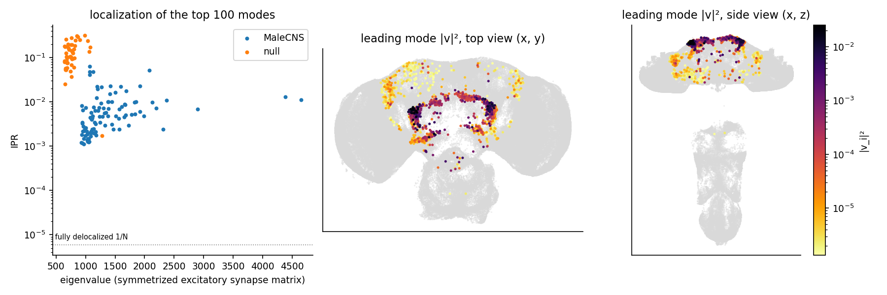
How to read it
- Further right means a stronger, more amplified mode.
- Higher means more concentrated on few neurons.
- On the maps, colour shows where the mode lives.
What it shows
- The real connectome's top modes reach eigenvalue 4,647 and 4,385 (very likely the left and right antennal lobes), far beyond the null's 1,280.
- The leading mode puts 84% of its weight on just 100 neurons and 99% on 1,000, all antennal-lobe local and projection neurons.
Three comparisons pin down where the localization comes from.
- Synapse counts make it. Counting every connection as 1 gives delocalized modes (no eigenvector with IPR above 0.01). The concentration comes from a few connections carrying very many synapses.
- The wiring makes it, not the hubs. In the rewired null, which keeps every neuron's connection counts and every synapse count, the top eigenvalue falls from 4,647 to 1,280 and the leading mode spreads out. The null does have localized modes, but each sits on a single heavily connected neuron (a "star"). The real connectome's localization is a whole interconnected module of a few hundred neurons.
- With inputs normalized per neuron, the top eigenvalues form a dense ladder just below 1 (0.91, 0.87, 0.85, 0.83, …), each sitting on about two optic-lobe neurons. A dense tail of strongly localized states would be the textbook spectral picture of a Griffiths phase (a "Lifshitz tail"), but these are artifacts. Checked: the modes sit on R7 and R8 photoreceptors, sensory neurons with only 1–5 input connections, where a single partner supplies 85–100% of the input. Normalizing per neuron turns a few stray synapses into full-strength loops.
5Decay experiments
The cleanest test for a Griffiths phase: start with every neuron active, switch off all outside input, and watch how the fraction of active neurons \(\rho(t)\) falls. Repeat for many couplings \(g\), with 32 independent runs each, up to 8,000 time units.
A sharp critical point predicts fast, exponential death below it, a power law \(\rho \sim t^{-\delta}\) at exactly one coupling, and sustained activity above it. A Griffiths phase predicts power-law decay over a whole range of couplings, with an exponent that changes smoothly across that range.
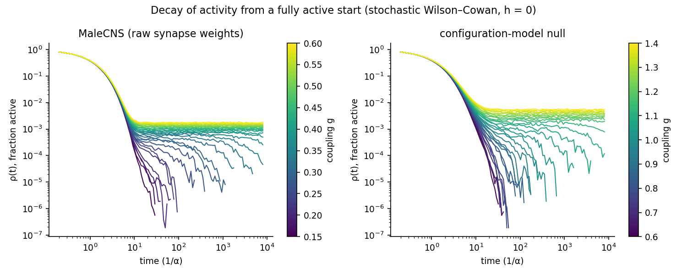
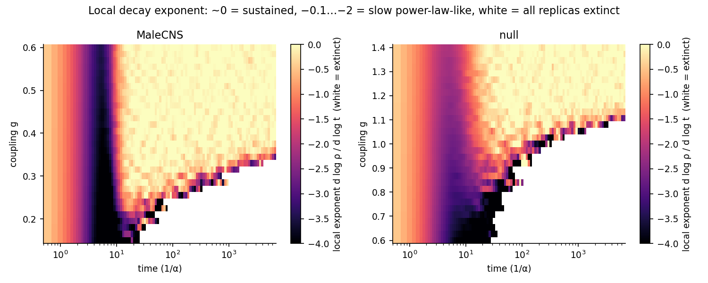
How to read it
- Each row is one coupling \(g\); time runs left to right on a log scale.
- Pale yellow (exponent near 0): activity is holding steady.
- Orange to purple (−0.5 to −3): activity is declining, slowly to fast.
- White: every run has died.
- The jagged edge of the white region is when the last run died.
What it shows
- At weak coupling everything dies within about 20–40 time units.
- Approaching onset, the white edge moves far to the right: runs survive for hundreds to thousands of time units before dying.
- Above onset (real ≈ 0.345, null ≈ 1.11) the rows turn pale: sustained activity.
- The lingering band is wider for the real connectome.
Fitting a power law to each decay curve below onset gives an exponent that changes smoothly with coupling, and a power law fits better than an exponential at every coupling:
| Decay exponent | Last run dies at | |
|---|---|---|
| Real, \(g = 0.15\) | −5.5 | 32 |
| Real, \(g = 0.255\) | −1.4 | 248 |
| Real, \(g = 0.315\) | −0.51 | 1,925 |
| Real, \(g = 0.33\) | −0.44 | 5,125 |
| Null, \(g = 0.60\) | −4.7 | 35 |
| Null, \(g = 0.973\) | −1.4 | 271 |
| Null, \(g = 1.08\) | −0.60 | 4,289 |
6Where the activity lives
For each run we also recorded how often each neuron was active over the second half of the run. From that we measure how many neurons effectively carry the activity (the participation ratio) and what share of it falls inside the antennal-lobe module, defined as the 1,000 neurons that carry most of the leading eigenvector.
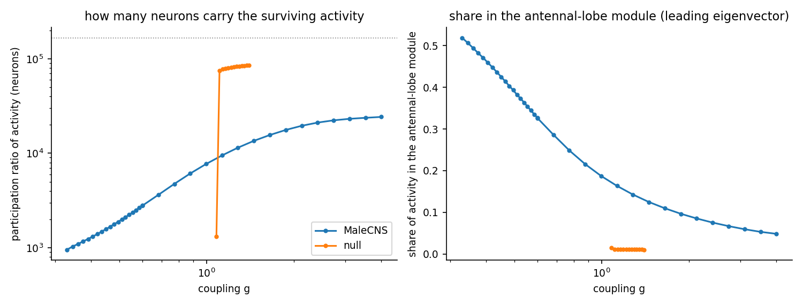
What it shows
- Real connectome: just above onset the activity is carried by about 950 neurons, 52% of it inside the antennal-lobe module. That grows smoothly, to about 2,800 neurons at \(g = 0.6\), 7,700 at 1.0 and 24,000 at 4.0, while the module's share falls to 5%. The curve is flattening out by \(g = 4\).
- Null: the moment it switches on, the activity is spread over about 75,000 neurons, with 1% in the same neurons.
- The real curve never jumps. There is no coupling at which the activity suddenly spreads over the whole CNS.
Why it matters
- This is the dynamical twin of the spectral result. Activity switches on where the leading eigenvector lives and stays there.
- A transition through a localized rare region that only slowly recruits the rest is the mechanism a Griffiths phase needs. The null shows an ordinary all-at-once transition.
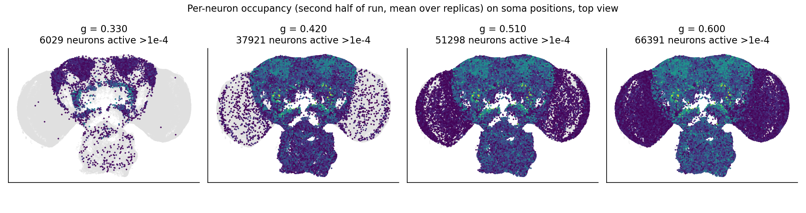
At \(g = 0.33\) a little over 6,000 neurons are ever active, concentrated in the central brain. By \(g = 0.42\) the activity has spread through the central brain and nerve cord, and only by \(g \approx 0.6\) does it fill the optic lobes. The brightest spots stay in the same central region throughout. Most of the 66,000 neurons touched at \(g = 0.6\) are only rarely active; the participation ratio says the bulk of the activity is still carried by under 3,000 of them.
What to watch
- The first few time units: every panel drops from 167,000 active neurons to about 2,000–8,000 by \(t = 5\). For most neurons the coupling is far too weak to keep them on.
- Real \(g = 0.25\): about 90 neurons in the central brain are still flickering at \(t = 10\); the network goes silent at \(t \approx 64\).
- Real 0.36 and 0.6: 100–300 neurons in the central brain hold on to the end; the rest stays dark.
The contrast
- Real \(g = 2.0\): about 1,600 neurons active, still concentrated in the central brain and nerve cord, with the optic lobes thinly lit.
- Null at 1.15: barely above its onset, yet its ~280 active neurons are scattered evenly over the whole CNS, with no home region.
- Null at 2.0: about 2,900 active, filling the optic lobes as densely as the centre.
7Order parameter
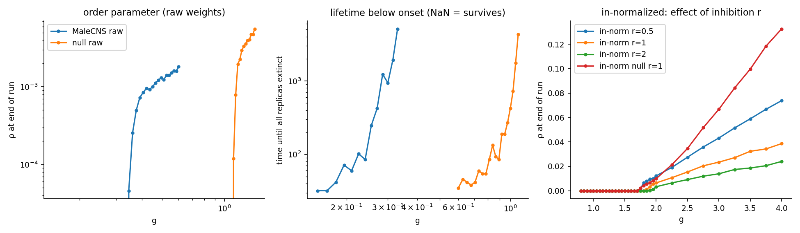
- Raw weights. The real connectome switches on at \(g \approx 0.34\), the null at \(g \approx 1.11\), a ratio of about 3.2. The connectome's localized module sets when activity can first sustain itself. (An earlier version of this page said the ratio matched the eigenvalue ratio of 3.6. That compared symmetrized matrices; the exact operator the simulation uses gives 5.1, and section 9 explains the gap.)
- Above onset, the real connectome's activity grows slowly and smoothly: 0.005% of neurons at \(g = 0.345\), 0.16% at 0.6, 0.4% at 1.0, 1.0% at 1.9 and 2.6% at 4.0. That is a smeared transition, not a jump, all the way to the top of the range we tried.
- With normalized inputs, the transition sits near \(g \approx 1.85\)–2.0, the null behaves almost the same, and decay below threshold is fast. Removing the heterogeneity removes the effect, consistent with the rare-region picture.
- Inhibition (\(r = 0.5, 1, 2\)) shifts the threshold only slightly, from about 1.75 to about 2.0 in the normalized model.
8Spreading from one neuron
The complementary test starts from a single active neuron, chosen at random, and asks how often the activity survives and how far it grows. In a Griffiths phase the survival probability decays as a power law with an exponent that varies with coupling.
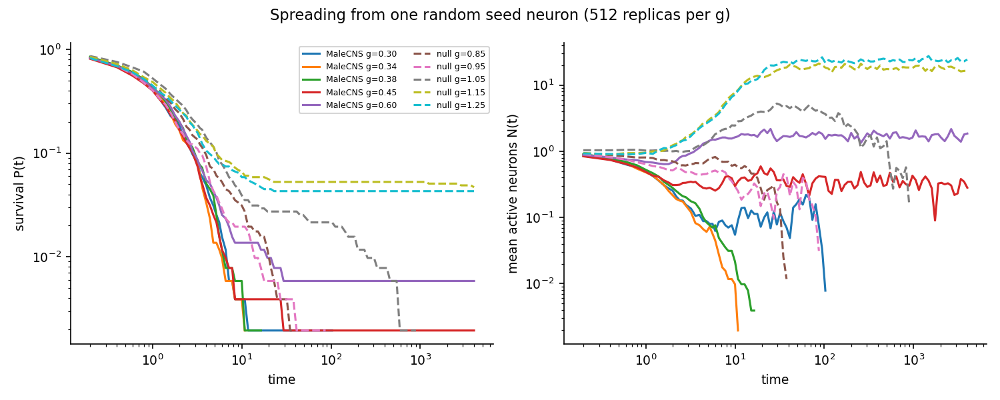
What it shows
- Real, \(g = 0.30\)–0.38: every seed dies within about 100 time units, even at 0.36–0.38, where a fully active start survives indefinitely.
- Real, 0.45 and 0.60: 1 and 3 of 512 seeds (0.2% and 0.6%) take hold. Each survivor sustains about 150–300 active neurons.
- Null, just above its onset: 4–5% of seeds take hold, and each grows to about 350–550 active neurons.
Why it matters
- In the real connectome, whether activity survives depends on where it starts. A random neuron is almost never in the module, and activity started elsewhere dies before it gets there.
- That is the rare-region signature from the other direction: a fully active start always visits the module, a random seed almost never does.
- The cost: with so few survivors, these runs cannot give a reliable survival exponent. That needs seeds placed inside the module, or many more runs.
9Putting it together
The pieces fit a consistent picture, which is still an interpretation:
- The connectome has a localized amplifier. The antennal-lobe module's strong, dense wiring gives it the largest eigenvalue in the network, and its eigenvector is confined to a few hundred neurons.
- That module goes unstable first. The linear estimate puts the module's threshold at \(g^* \approx 0.18\)–0.20 (table below). That is where lifetimes start to stretch out (from about 30 time units at \(g = 0.15\) to over 70 by 0.195).
- A small region can't hold activity forever. Between about 0.2 and 0.34 the module is unstable on paper but small enough that random fluctuations eventually silence it. Activity lingers in long bursts and dies, which produces the slow window. Only from about 0.34 does the module sustain itself indefinitely.
- The rest is recruited gradually. Above that, activity leaks outward from the module as coupling grows, with no sudden jump to a global state up to \(g = 4\). In the rewired network there is no such module, and the whole network switches on at once.
To check the theory against the simulation exactly, we computed the leading eigenvalue of the very matrix the simulation uses, for the real connectome and for the same rewired copy the null runs used. The linear prediction is \(g^* = 1/\Lambda_{\max}\) (with \(\alpha = \beta = 1\)).
| Raw weights | \(\Lambda_{\max}\) | Predicted \(g^*\) | Observed onset | Observed / predicted | Neurons in leading mode (1/IPR) |
|---|---|---|---|---|---|
| Real, signed (as simulated) | 5.06 | 0.197 | 0.34 | 1.7 | ≈ 50 |
| Real, excitatory inputs only | 5.57 | 0.179 | 0.34 | 1.9 | ≈ 70 |
| Null, signed (as simulated) | 0.37 | 2.68 | 1.11 | 0.41 | ≈ 970 |
| Null, excitatory inputs only | 1.10 | 0.91 | 1.11 | 1.2 | ≈ 2,000 |
Two things come out of this.
- The excitatory-only matrix is the right one near silence. For the null, the signed matrix predicts onset at 2.68, yet activity sustains itself already at 1.11, which no linear theory allows. The reason is the rectified rate: an active inhibitory neuron can only cancel excitation that the same target is receiving. When activity is sparse that rarely happens, so inhibition does almost nothing and growth is governed by the excitatory connections. In the real connectome the two estimates nearly agree (5.06 against 5.57), so inhibition barely affects the module.
- The gap between prediction and onset measures the rare-region effect. In the null the leading excitatory mode is spread over about 2,000 neurons, and activity sustains itself just 1.2 times above the linear threshold. In the real connectome it sits on about 70 neurons, and sustaining activity takes 1.9 times the threshold, because a region that small is easily silenced by chance. That factor is also why the onset ratio (3.2) is smaller than the eigenvalue ratio (5.1): 5.1 × 1.2 / 1.9 ≈ 3.2.
With normalized inputs the same pattern holds for the real connectome: \(\Lambda_{\max} = 0.91\) predicts 1.09, but the leading modes sit on about two neurons each, far too few to hold activity, and the observed onset is 1.85–2.0. Those two-neuron modes are photoreceptors with almost no input (section 4), so this is an artifact of normalizing, not a real rare region. In the rewired copy, the leading normalized mode is spread out and the signed estimate is 4.5, again far above where activity actually sustains itself, for the same rectification reason.
A full derivation of these boundaries from the model equations, with predictions for the whole (coupling, inhibition) plane written before the sweep finished, is on the theory page.
In Griffiths-phase language: the window between the most localized mode's instability and the global, delocalized transition is where rare regions dominate. Its width is set by how far the localized eigenvalues stick out above the rest of the spectrum and how few neurons carry them. Here the lower edge is clear (about 0.18–0.20 on paper, 0.26 where lifetimes become long), but no upper edge has appeared: the real connectome never makes a sudden delocalized transition up to \(g = 4\). The transition looks smeared. One region after another switches on as coupling grows, rather than one global switch.
10The complete phase diagram: simulation vs theory
Overnight the simulation was rerun on a fine grid. The real connectome was swept at 23 inhibition levels from r = 0 to 6, each with 40 couplings near the onset and 32 runs per point, plus the delocalized region up to g = 30. Both null networks were swept at 6 levels, and the driven plane on a finer grid. To compare like with like, simulation and theory now use the same criteria, with simulated lifetimes estimated from each run's extinction time:
- the slow window starts where the module's mean lifetime reaches 200 time units;
- activity counts as sustained where the lifetime reaches T = 3000;
- activity is delocalized where it is spread over a quarter of the network (participation ratio N/4).
Each analysis was then checked by an independent agent that recomputed its numbers from the raw files, and a final reviewer recomputed the boundaries again.
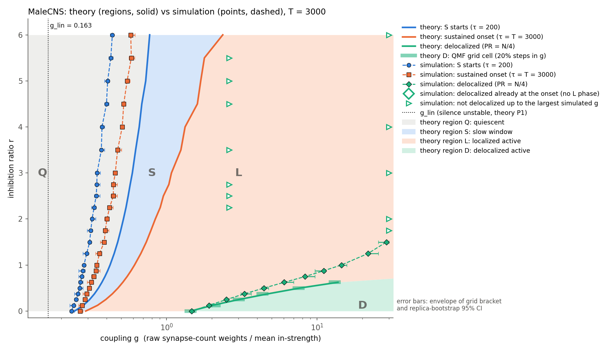
Where the theory works
- The order of the phases is right everywhere: quiescent, then slow window, then sustained, all starting well above g_lin.
- Without inhibition (r = 0) the numbers nearly agree. Slow window 0.245 (theory) vs 0.234, onset 0.291 vs 0.266, delocalization 1.45 vs 1.47. The theory is 5–9% high.
- Mean field gets delocalization right at r = 0, to within its 20% coupling grid.
Where it fails
- Inhibition moves every boundary far less than the theory says. From r = 0 to 6 the simulated onset rises 2.2-fold (0.266 → 0.579); the theory's rises 8.1-fold (0.291 → 2.36).
- Theory/simulation onset ratio: 1.38 at r = 0.25, 1.78 at r = 1, 4.1 at r = 6.
- Mean field overstates inhibition the same way. It never delocalizes for r ≥ 0.75 up to g = 30, whereas the simulation delocalizes at g = 8–29 for r = 0.75–1.5.
| Network | r | S theory | S simulation | Onset theory | Onset simulation | D theory | D simulation |
|---|---|---|---|---|---|---|---|
| MaleCNS | 0 | 0.245 | 0.234 [0.228–0.244] | 0.291 | 0.266 [0.26–0.278] | 1.45 | 1.47 [1.44–1.54] |
| MaleCNS | 0.25 | 0.308 | 0.251 [0.244–0.256] | 0.395 | 0.287 [0.278–0.297] | 3.01 | 2.5 [2.44–2.6] |
| MaleCNS | 0.5 | 0.353 | 0.265 [0.26–0.278] | 0.476 | 0.306 [0.3–0.317] | 7.67 | 4.44 [4.3–4.76] |
| MaleCNS | 1 | 0.421 | 0.283 [0.28–0.289] | 0.613 | 0.344 [0.34–0.35] | none ≤ 30 | 14.5 [14.4–15.7] |
| MaleCNS | 2 | 0.517 | 0.32 [0.313–0.339] | 0.842 | 0.402 [0.386–0.415] | none ≤ 30 | not reached |
| MaleCNS | 4 | 0.658 | 0.373 [0.362–0.386] | 1.33 | 0.508 [0.495–0.525] | none ≤ 30 | not reached |
| MaleCNS | 6 | 0.772 | 0.436 [0.422–0.44] | 2.36 | 0.579 [0.561–0.615] | none ≤ 30 | not reached |
| Configuration null | 0 | 0.837 | 0.841 [0.838–0.905] | 0.866 | 0.867 [0.838–0.905] | 0.91 | 0.867 [0.838–0.905] |
| Configuration null | 1 | 1.12 | 1.01 [1–1.03] | 1.27 | 1.11 [1.1–1.13] | 4.2 | 1.11 [1.1–1.13] |
| Configuration null | 4 | 1.26 | 1.09 [1.06–1.1] | 1.48 | 1.2 [1.14–1.24] | none ≤ 30 | 1.2 [1.14–1.24] |
| Weight-shuffled null | 0 | 0.719 | 0.709 [0.664–0.717] | 0.766 | 0.734 [0.717–0.757] | 1.18 | 1.21 [1.14–1.24] |
| Weight-shuffled null | 1 | 0.873 | 0.762 [0.757–0.775] | 0.984 | 0.799 [0.775–0.838] | 15.9 | 4.68 [4.63–4.76] |
| Weight-shuffled null | 4 | 0.961 | 0.871 [0.838–0.905] | 1.12 | 0.957 [0.91–0.979] | none ≤ 30 | 21.8 [20.8–25] |
Couplings g at each boundary; brackets are the simulation's uncertainty. "none ≤ 30": mean field never reaches N/4 up to g = 30. For the configuration null, D coincides with the onset at every r: it has no localized phase. All values are from results/analysis2/phase_complete.json.
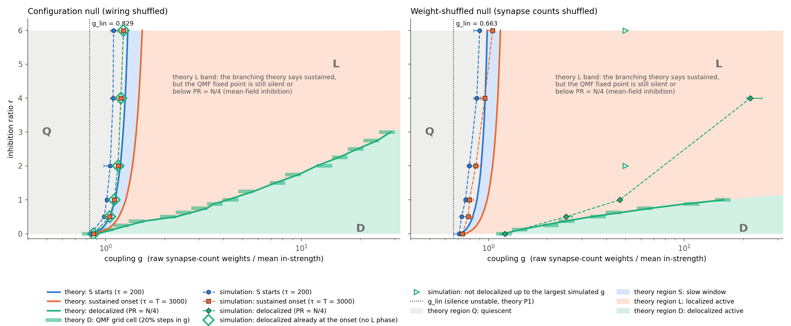
- Configuration null. It goes straight from the slow window to whole-brain activity at every inhibition level, as predicted (P4). Its onset is matched closely at r = 0, and at r ≥ 1 it is overstated as in the real network (1.27 vs 1.11 at r = 1).
- Weight-shuffled null. Contrary to P4, it does have a localized phase. At r = 0 it switches on at 0.73 and delocalizes only at 1.21. So scrambling which synapses are strong does not remove every local hot spot; the real network's distinctive feature is that its hot spot is far stronger (onset 0.27).
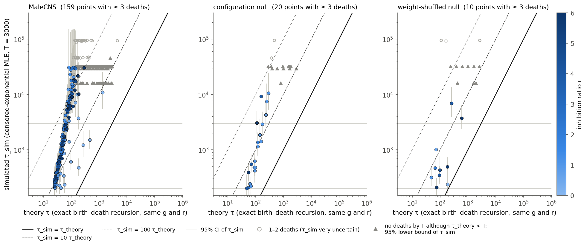
The theory underestimates how long the module survives. Every point lies above the diagonal. Without inhibition the miss is about 4× (geometric mean). For r ≥ 0.25 it is 17–54×, about 40× at r = 1. In the theory's own terms (section 5 of the theory page), the simulated lifetimes need a module about twice the size the theory computes: K ≈ 37 rather than 17 at r = 1, and K ≈ 76 rather than 58 at r = 0. The most likely culprit is the approximation for inhibition arriving together with excitation, which seems to overstate how much inhibition shrinks the module. That is a hypothesis, not a finding: at r = 0 even removing that term entirely leaves the theory a little short.
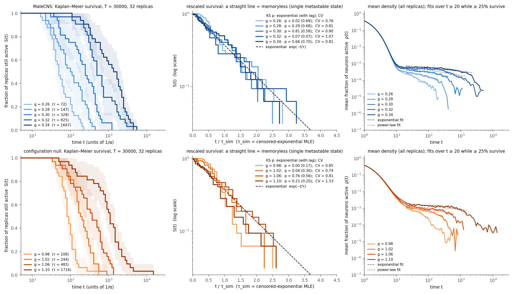
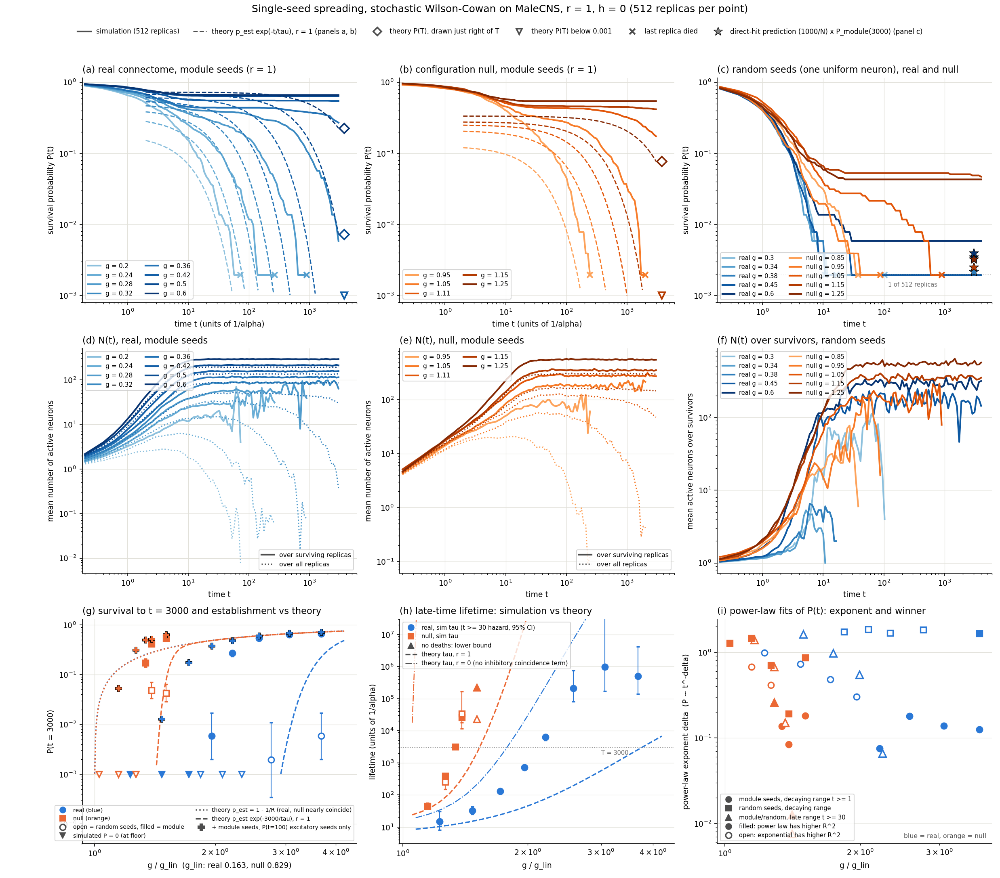
- Establishment is predicted. A seed placed on an excitatory module neuron takes hold with probability 0.61, 0.69 and 0.71 at g = 0.42, 0.50 and 0.60. The branching prediction 1 − 1/R gives 0.61, 0.67 and 0.73.
- Survival afterwards is not. The theory's lifetimes are too short (Figure 13), so it predicts almost no survivors where 27–66% survive.
- Random seeds survive only by hitting the module. All 4 random seeds that took hold in the real network were antennal-lobe neurons: two in the module and two olfactory receptor neurons that feed it. The rate matches the module's share of the network (0.6%).
- The null has no such bottleneck. 45 of its 46 surviving seeds started outside its leading mode, from an effective catchment of 13,000–20,000 neurons.
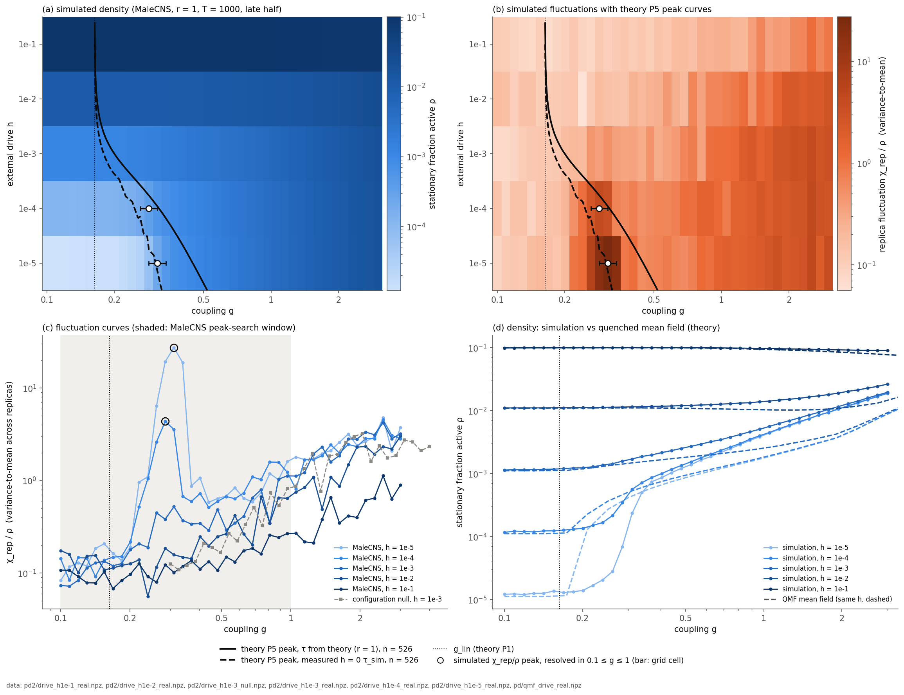
- The flickering-module picture holds. With weak drive (h = 10⁻⁵) the fluctuations peak at g ≈ 0.30, where the module flickers between about 2 and about 100 active neurons and is on half the time. Theory P5 puts the peak at 0.305 if fed the measured lifetime; with its own (too short) lifetime it says 0.45.
- The peak moves down only weakly with drive. The half-on point moves from 0.316 (h = 10⁻⁵) to 0.274 (h = 10⁻⁴), less than predicted. For h ≥ 10⁻³ there is no resolved peak.
- Mean field matches the density to within 9% below threshold. Above g ≈ 0.5 it falls about 2.3× low, overstating inhibition again.
Full tables, methods and every correction made by the verifiers: results/analysis2/phase_complete.md, spreading.md, longruns.md, driven.md.
11The antennal lobe: why it dominates, and what the literature says
In every simulation of our model (raw synapse counts, one global scale), the module that ignites first is the antennal lobe (AL), the fly's first olfactory relay. We asked why the connectome makes it special, and whether its special status matches anything known about sleep, anesthesia, consciousness or brain-state transitions in this region. Short answers: why special: a stereotyped clique of cholinergic local neurons, not sensory input. Sleep: yes, there is a real AL–sleep literature, but it is modulatory. Olfactory input and two GABAergic AL output populations change how much, and when, flies sleep, and AL synapses and glia respond to sleep loss. No study shows AL activity switching with sleep state, and a whole-brain survey after sleep deprivation found little change in the AL. Consciousness and phase transitions: we found no empirical result tying the AL to consciousness, anesthesia, seizures or a brain-state transition. We also found no recording of the fly AL across verified sleep or under general anesthesia, and no criticality measurement for it. The closest agreement is theoretical: another fly-connectome model also finds no Griffiths phase.
In each lobe, 15 cholinergic local neurons (lLN1_bc) are wired all-to-all at about 200 synapses per connection. With the PN↔LN loops, this gives the AL an excitatory feedback strength 2.97× that of the next circuit. None of the 2,639 olfactory receptor neurons are in the module, and removing them leaves λ at 5.55 of 5.57.
Olfactory input and two GABAergic AL outputs change how much, and when, flies sleep. AL synapses scale with sleep loss as much as, but no more than, other regions, and AL glia respond to sleep need. The AL keeps processing odors during sleep. No study shows the AL generating sleep or its activity switching with sleep state, and none links it to anesthesia or consciousness.
Real spontaneous AL activity is driven by the receptor neurons: projection neurons of antennal glomeruli fall silent when the antennae are cut. Our model's AL sustains itself with no input. The model also lacks gap junctions, neuromodulation and any sleep-pressure variable.
We found no recording of the fly AL across verified sleep or under general anesthesia. The model makes specific predictions for both.
Why the AL dominates in our model
| Quantity (excitatory operator, r = 0) | Value |
|---|---|
| Module size; ORNs in it | 526; 0 of 2,639 |
| Share of leading mode on 30 lLN1_bc / all lLN2 / uniglomerular PNs | 51% / 29% / 9% |
| Leading eigenvalue; best mode outside the AL | 5.57; 1.88 (VNC leg) |
| lLN1_bc clique alone (420 of 420 same-side pairs, median 204 synapses) | λ = 3.92 |
| Share of λ from LN→LN / PN→LN / LN→PN / any ORN edge | 64.7 / 16.8 / 16.5 / 0.9% |
| Strongest 200 reciprocal excitatory pairs in the CNS that lie in the AL | 161 |
| Each region alone: AL / VNC / other central / CX / LH / MB | 5.57 / 1.70 / 1.47 / 1.28 / 0.49 / 0.47 |
- Survives: removing all ORNs (5.55), keeping only neurons with a soma (5.50), and capping every weight at 50, 20 or 10 synapses (margins 2.2×, 1.8×, 1.4×).
- Killed by: binarizing the weights, after which the mushroom body's many weak Kenyon-cell contacts lead, making the AL local neurons non-excitatory, after which the AL leaves the top 8 modes, and per-neuron input normalization (used early in the project), under which two-neuron optic-lobe motifs lead.
- So: the cause is not sensory convergence. The cause is a stereotyped, heavily weighted, reciprocal cholinergic local-neuron network, and its cholinergic label is decisive. The release labels all 30 lLN1_bc acetylcholine (ground truth 30/30, confidence 0.75). Cholinergic excitatory LNs do exist (Shang 2007; Huang 2010), but they are a minority type. Even in the release's own predictions, only 137 of the 420 AL local neurons are cholinergic (115 GABA, 99 glutamate, 67 unclear), so the result depends on getting these particular labels right. The neurons that carry 80% of the leading mode are only preliminarily traced. Independently, FlyWire places the AL among the most reciprocal neuropils, with strong left–right AL coupling (Lin 2024).
What is known about the AL and sleep
| Finding | Source | Strength |
|---|---|---|
| Silencing receptor neurons reduced sleep. An independent test found less night sleep and no daytime change (Singh & Donlea 2020). Activating GABAergic inhibitory PNs at night strongly increased sleep, but the driver also labels vlPr neurons outside the AL (the authors' caveat). No single olfactory population regulates sleep in both directions. Local neurons were not tested. | Hsu 2021 AL-direct | moderate |
| A preprint reports that receptor-neuron silencing increased sleep, the opposite sign to both peer-reviewed tests above, with glomerulus-specific effects. Its detailed signs could not be checked. | Cook 2025 preprint | weak |
| A posterior-AL cold glomerulus sends GABAergic projection neurons to DN1a clock neurons, which reshape morning sleep. | Alpert 2020 AL-direct | moderate |
| After 13 h of sleep deprivation, CaMPARI activity snapshots rose in the protocerebral bridge, ellipsoid body and mushroom body, with "little change" in the AL. The whole-brain survey was photoconverted ex vivo, in dissected brains with no antennal input. | Dai 2024 AL-direct, negative | moderate |
| After 16 h of deprivation, AL synaptic BRP rose 69%, as it did elsewhere. Cholinergic presynapses scale roughly uniformly across 37 neuropils. | Gilestro 2009; Weiss 2024 | strong, not AL-specific |
| AL astrocyte calcium tracks sleep need (imaged in the AL and one other region). Sleep loss slows, and induced sleep speeds, glial clearance of injured olfactory axons from the AL. | Blum 2021; Singh & Donlea 2020; Stanhope 2020 | moderate |
| Sleeping flies tell odors apart and wake selectively. The identified gates sit in the receptor neurons and the mushroom body or fan-shaped body. No AL shut-off was reported. | French 2021 | strong (indirect for the AL) |
| In honeybees resting at night, AL glomeruli are more functionally coupled. Rest was immobility, not verified sleep. A model reproduces this with weaker local inhibition plus correlated noise, so the mechanism is inferred, not measured. | Moguilner 2025 bee, n = 9 | weak to moderate |
| In the mammalian olfactory bulb, few neurons are gated by sleep-like state. Olfactory cortex is gated. | Murakami 2005 olfactory-general | moderate |
Coverage gaps: whole-brain sleep imaging did not include the AL (Tainton-Heap 2021), and fly sleep-stage recordings were taken in the central brain or the R5 ring neurons. No study records the fly AL across verified sleep or tests AL local neurons in sleep regulation.
Anesthesia, consciousness and seizures
- We found no insect AL recording under general anesthesia. Fly isoflurane studies probed through the eye, covering the optic lobe and central brain (Leung 2021; Leung 2025), or imaged from behind (Troup 2023).
- Where it was measured: isoflurane hits the central brain harder than the periphery (Cohen 2016; Cohen 2018). It fragments correlations without silencing the brain: about 18% of neurons are active awake versus 15% under isoflurane (Troup 2023). It impairs cholinergic release but spares GABA and glutamate synapses, measured at mushroom-body output neurons (Hines 2024). Wakefulness is marked by longer autocorrelation timescales, measured in the central brain (Leung 2025).
- The AL in awake recordings: it has the most spontaneous spiking and the most power above 15 Hz. GABAergic activation raises its 50–100 Hz power (Paulk 2013). However, spontaneous projection-neuron input is fed forward from the receptor neurons (Kazama & Wilson 2009).
- Consciousness: the leading insect account places it in the central complex. The AL appears only as primary odor processing (Barron & Klein 2016).
- Seizures: optogenetic initiation maps to the mushroom body α/β lobes, and no AL driver was tested (Saras 2017). Blocking output of GH146 projection neurons had no effect on seizure sensitivity (Hekmat-Scafe 2010). The AL is not implicated.
Criticality and state transitions
- A Kuramoto model on the hemibrain also found a mean-field-like transition with no clear Griffiths phase, at most "a very weak" one (Ódor 2022). This agrees with our no-Griffiths-phase result, but from a different model class (phase oscillators) on a partial connectome.
- Theory accounts for our onset shape. A localized leading eigenvector keeps activity on a few nodes, followed by a gradual crossover (Goltsev 2012). A Griffiths phase needs many rare regions of different sizes, not one (Moretti & Muñoz 2013).
- Known AL dynamics are odor-evoked and shaped by inhibition: local-neuron GABA sets synchrony (Tanaka 2009), activity returns to baseline when input stops (Mazor & Laurent 2005), and projection neurons are silent without antennae (Olsen 2007). A bee AL keeps an odor-specific correlation trace for minutes (Galán 2006), the closest analogue to our slow window.
- Our searches found no avalanche or criticality measurement for the insect AL, the olfactory bulb or the whole fly brain.
Where the model agrees, and where it does not
Aligns
- The AL is reciprocal and bilaterally coupled (Lin 2024) and shows the most spiking in multisite recordings (Paulk 2013). With the antennae and proboscis removed, olfactory regions including the AL still give some of the strongest resting correlations in the brain (Mann 2017; Turner 2021). That evidence concerns correlations, not activity levels.
- Local inhibition controls AL dynamics (Olsen & Wilson 2008). In the model, inhibition raises the onset from 0.27 at r = 0 to 0.58 at r = 6.
- The first relay stays on across states, as our lowest-threshold AL would.
- In resting bees, a model attributes the more coupled AL to weaker local inhibition (Moguilner 2025). In our model, weaker inhibition likewise favours self-sustained AL activity.
- There is no Griffiths phase, with independent hedged agreement from another fly-connectome model.
- Isoflurane and sleep loss have natural, untested counterparts in our parameters: a cholinergic gain cut (Hines 2024) and a uniform cholinergic gain increase (Weiss 2024).
Tension
- The real AL's spontaneous activity is fed forward from receptor neurons (Kazama & Wilson 2009; Olsen 2007, palps left intact), whereas ours sustains itself at h = 0.
- 12 h of sleep deprivation raises cholinergic presynaptic protein by 21–39% (Weiss 2024), more than the width of our whole slow window (1.14–1.22× in g), yet a separate 13 h study found little AL change (Dai 2024, ex vivo). If presynaptic protein scaled gain one-to-one, the AL would cross its onset. One reading is that the real AL sits well below its onset. That reading is an inference across two studies, and protein abundance is not gain.
- Sleep and anesthesia are not silence, so h = 0 sub-onset quiescence is not a model of either.
- The model has no sleep homeostat (dorsal fan-shaped body, ellipsoid-body R5 neurons, protocerebral bridge, clock neurons), no neuromodulation and no gap junctions.
- The direction of first-relay inhibition across states is contested (Kato 2012 vs Tsuno 2008). Silencing a third of fly AL local neurons left odor responses unchanged (Strube-Bloss 2017).
- Odor identity still reaches the mushroom body during fly sleep (Kirszenblat 2025, preprint). That cuts against the idea that sleep simply blocks propagation beyond the AL.
- The fluctuation peak needs very weak drive (h = 1e-5) and is not resolved at h ≥ 1e-3.
Predictions an experiment could check
- Graded isoflurane with the AL in view. Use registered multisite recordings or light-field imaging. The model predicts the central and motor tiers drop out first and the AL last, with AL fluctuations peaking at a light dose.
- Full deafferentation. Remove the antennae and maxillary palps, then apply a brief pulse to AL local neurons. If the model's recurrence is real, AL activity outlasts the MB's and LH's, with memoryless lifetimes that grow steeply with cholinergic gain.
- The AL across verified sleep. Image projection and local neurons together with the mushroom-body calyx. The original hypothesis predicts a quieter AL in sleep. The literature-guided reading predicts a preserved, more coupled AL, with the state change appearing downstream in the mushroom body and lateral horn.
- Manipulating AL local neurons and measuring sleep architecture and arousal threshold. This has never been tested. The model predicts that less GABAergic inhibition gives a more self-coupled AL, which would be rest-like if the bee result transfers.
- After 12 h of sleep deprivation. AL off-responses and odor-specific correlation traces should lengthen before those of other regions, if the AL is the circuit closest to its onset.
Next simulations: drive the receptor neurons instead of setting h = 0, and fit the gain to "silent without antennae". Add eLN–PN gap junctions. Rerun with lLN1_bc signs flipped. Model isoflurane as a cholinergic-only gain cut. Model sleep loss as a uniform 21–39% cholinergic gain increase. Add a slow sleep-pressure variable on the dFB, R5 and protocerebral-bridge neurons. Treat neuromodulators as region-specific changes of g and r. Use recruitment beyond the AL as the wake order parameter.
Fact-check: four independent checks covered about 130 citation entries plus about 40 recomputed numbers. No citation was rated "not found" or "misreported", so none was dropped. A few were only partly verified (Cook 2025, Lin 2024, Ódor 2022, Tanaka 2009's issue number) and are used here only for what was confirmed. The negative claims ("no study records ...") were not contradicted by targeted searches, which is as far as a negative claim can be checked, so they are phrased as search results. One unread conference poster was excluded. In the data, the stated normalization constant was misreported (1/742.7) and is corrected below; no eigenvalue changes. Corrections applied: seizure initiation is placed in the MB α/β lobes only; the hedges in Ódor 2022 are restored; Weiss 2024 is limited to cholinergic, within-transmitter-class changes; the detailed results of Cook 2025 are marked provisional; and c = 1/745.9 for the normalization constant.
References
- Alpert MH et al. 2020. A circuit encoding absolute cold temperature in Drosophila. Curr Biol 30:2275. doi:10.1016/j.cub.2020.04.038
- Barron AB, Klein C 2016. What insects can tell us about the origins of consciousness. PNAS 113:4900. doi:10.1073/pnas.1520084113
- Blum ID et al. 2021. Astroglial calcium signaling encodes sleep need in Drosophila. Curr Biol 31:150. doi:10.1016/j.cub.2020.10.012
- Cohen D, Zalucki OH, van Swinderen B, Tsuchiya N 2016. Local versus global effects of isoflurane anesthesia on visual processing in the fly brain. eNeuro 3:ENEURO.0116-16.2016. doi:10.1523/ENEURO.0116-16.2016
- Cohen D, van Swinderen B, Tsuchiya N 2018. Isoflurane impairs low-frequency feedback but leaves high-frequency feedforward connectivity intact in the fly brain. eNeuro 5:ENEURO.0329-17.2018. doi:10.1523/ENEURO.0329-17.2018
- Cook OM et al. 2025. Individual olfactory channels shape distinct parameters of sleep architecture. bioRxiv preprint; details partly verified. doi:10.1101/2025.09.11.675654
- Dai X, Le JQ, Ma D, Rosbash M 2024. Four SpsP neurons are an integrating sleep regulation hub in Drosophila. Sci Adv 10:eads0652. doi:10.1126/sciadv.ads0652
- French AS et al. 2021. Sensory processing during sleep in Drosophila melanogaster. Nature 598:479. doi:10.1038/s41586-021-03954-w
- Galán RF et al. 2006. Sensory memory for odors is encoded in spontaneous correlated activity between olfactory glomeruli. Neural Comput 18:10. doi:10.1162/089976606774841558
- Gilestro GF, Tononi G, Cirelli C 2009. Widespread changes in synaptic markers as a function of sleep and wakefulness in Drosophila. Science 324:109. doi:10.1126/science.1166673
- Goltsev AV et al. 2012. Localization and spreading of diseases in complex networks. Phys Rev Lett 109:128702. doi:10.1103/PhysRevLett.109.128702
- Hekmat-Scafe DS et al. 2010. Seizure sensitivity is ameliorated by targeted expression of K+-Cl- cotransporter function in the mushroom body of the Drosophila brain. Genetics 184:171. doi:10.1534/genetics.109.109074
- Hines AD et al. 2024. Synapse-specific trapping of SNARE machinery proteins in the anesthetized Drosophila brain. J Neurosci 44. doi:10.1523/JNEUROSCI.0588-23.2024
- Hsu CT, Choi JTY, Sehgal A 2021. Manipulations of the olfactory circuit highlight the role of sensory stimulation in regulating sleep amount. Sleep 44:zsaa265. doi:10.1093/sleep/zsaa265
- Huang J et al. 2010. Functional connectivity and selective odor responses of excitatory local interneurons in Drosophila antennal lobe. Neuron 67:1021. doi:10.1016/j.neuron.2010.08.025
- Kato HK et al. 2012. Dynamic sensory representations in the olfactory bulb: modulation by wakefulness and experience. Neuron 76:962. doi:10.1016/j.neuron.2012.09.037
- Kazama H, Wilson RI 2009. Origins of correlated activity in an olfactory circuit. Nat Neurosci 12:1136. doi:10.1038/nn.2376
- Kirszenblat L, Someya M, Kazama H 2025. Sleep promotes aversive value coding in Drosophila. bioRxiv preprint; abstract verified only. doi:10.1101/2025.07.04.663253
- Leung A et al. 2021. Integrated information structure collapses with anesthetic loss of conscious arousal in Drosophila melanogaster. PLoS Comput Biol 17:e1008722. doi:10.1371/journal.pcbi.1008722
- Leung A et al. 2025. Wakefulness can be distinguished from general anesthesia and sleep in flies using a massive library of univariate time series analyses. PLoS Biol 23:e3003217. doi:10.1371/journal.pbio.3003217
- Lin A et al. 2024. Network statistics of the whole-brain connectome of Drosophila. Nature 634:153 (cited for reciprocity only). doi:10.1038/s41586-024-07968-y
- Mann K, Gallen CL, Clandinin TR 2017. Whole-brain calcium imaging reveals an intrinsic functional network in Drosophila. Curr Biol 27:2389. doi:10.1016/j.cub.2017.06.076
- Mazor O, Laurent G 2005. Transient dynamics versus fixed points in odor representations by locust antennal lobe projection neurons. Neuron 48:661. doi:10.1016/j.neuron.2005.09.032
- Moguilner S et al. 2025. Neuronal correlates of sleep in honey bees. Neural Netw 189:107575. doi:10.1016/j.neunet.2025.107575
- Moretti P, Muñoz MA 2013. Griffiths phases and the stretching of criticality in brain networks. Nat Commun 4:2521. doi:10.1038/ncomms3521
- Murakami M et al. 2005. State-dependent sensory gating in olfactory cortex. Neuron 46:285. doi:10.1016/j.neuron.2005.02.025
- Ódor G, Deco G, Kelling J 2022. Differences in the critical dynamics underlying the human and fruit-fly connectome. Phys Rev Research 4:023057. doi:10.1103/PhysRevResearch.4.023057
- Olsen SR, Bhandawat V, Wilson RI 2007. Excitatory interactions between olfactory processing channels in the Drosophila antennal lobe. Neuron 54:89. doi:10.1016/j.neuron.2007.03.010
- Olsen SR, Wilson RI 2008. Lateral presynaptic inhibition mediates gain control in an olfactory circuit. Nature 452:956. doi:10.1038/nature06864
- Paulk AC et al. 2013. Multichannel brain recordings in behaving Drosophila reveal oscillatory activity and local coherence in response to sensory stimulation and circuit activation. J Neurophysiol 110:1703. doi:10.1152/jn.00414.2013
- Saras A et al. 2017. Investigation of seizure-susceptibility in a Drosophila melanogaster model of human epilepsy with optogenetic stimulation. Genetics 206:1739. doi:10.1534/genetics.116.194779
- Shang Y et al. 2007. Excitatory local circuits and their implications for olfactory processing in the fly antennal lobe. Cell 128:601. doi:10.1016/j.cell.2006.12.034
- Singh P, Donlea JM 2020. Bidirectional regulation of sleep and synapse pruning after neural injury. Curr Biol 30:1063. doi:10.1016/j.cub.2019.12.065
- Stanhope BA et al. 2020. Sleep regulates glial plasticity and expression of the engulfment receptor Draper following neural injury. Curr Biol 30:1092. doi:10.1016/j.cub.2020.02.057
- Strube-Bloss MF, Grabe V, Hansson BS, Sachse S 2017. Calcium imaging revealed no modulatory effect on odor-evoked responses of the Drosophila antennal lobe by two populations of inhibitory local interneurons. Sci Rep 7:7854. doi:10.1038/s41598-017-08090-y
- Tainton-Heap LAL et al. 2021. A paradoxical kind of sleep in Drosophila melanogaster. Curr Biol 31:578. doi:10.1016/j.cub.2020.10.081
- Tanaka NK, Ito K, Stopfer M 2009. Odor-evoked neural oscillations in Drosophila are mediated by widely branching interneurons. J Neurosci 29(26):8595. doi:10.1523/JNEUROSCI.1455-09.2009
- Troup M, Tainton-Heap LAL, van Swinderen B 2023. Neural ensemble fragmentation in the anesthetized Drosophila brain. J Neurosci 43:2537. doi:10.1523/JNEUROSCI.1657-22.2023
- Tsuno Y, Kashiwadani H, Mori K 2008. Behavioral state regulation of dendrodendritic synaptic inhibition in the olfactory bulb. J Neurosci 28:9227. doi:10.1523/JNEUROSCI.1576-08.2008
- Turner MH, Mann K, Clandinin TR 2021. The connectome predicts resting-state functional connectivity across the Drosophila brain. Curr Biol 31:2386. doi:10.1016/j.cub.2021.03.004
- Weiss JT et al. 2024. Sleep deprivation drives brain-wide changes in cholinergic presynapse abundance in Drosophila melanogaster. PNAS 121:e2312664121 (cholinergic, within transmitter class). doi:10.1073/pnas.2312664121
Critic review
An independent pass checked citation coverage against the line 1–3 verification tables, re-read six sources from their primary text (Hsu 2021, Dai 2024, Paulk 2013, Singh & Donlea 2020 and Mann 2017 in full text; Hines 2024 in the abstract; Ódor 2022 in the arXiv PDF), and checked every data number against data_grounding.json and results/analysis2/phase_complete.md. All 37 original citations are rated verified or partly verified in the tables. All six spot-checks confirmed the cited claim. Every data number matched. Changes:
- Direct answer. The lede now answers the three parts of the question (why the AL is special; sleep; consciousness and phase transitions) in turn.
- Overstatements softened. "No study shows the AL ... gating sleep" contradicted the report's own Hsu and Alpert rows and was reworded. The authors' Mz699/vlPr caveat was added to the iPN result. "Sleep is needed" for glial clearance became "sleep loss slows, induced sleep speeds". "Map directly onto our parameters" became "untested counterparts". "The real AL probably sits well below its onset" is now marked as an inference across two studies. "Nobody has recorded", "no ... exists" and "the gates ... not in an AL shut-off" are now phrased as search results or as what was reported.
- Unsourced claim replaced. "Most AL LNs are GABAergic" appears in no verification table, and the release's own predictions disagree. It was replaced with the grounded count (137 of 420 ALLN cholinergic; 115 GABA, 99 Glu, 67 unclear).
- Method caveat added. Dai 2024's whole-brain CaMPARI survey was photoconverted ex vivo, after 13 h of deprivation (read in the full text). The AL therefore had no antennal input when it was measured.
- Attribution fixed. The anesthesia bullet credited everything to Hines 2024. Each claim now cites its own source: Cohen 2016/2018 for central versus periphery, Troup 2023 for 18% vs 15%, Hines 2024 (mushroom-body output neurons) for the cholinergic result, and Leung 2025 for autocorrelation.
- Balance. Added Singh & Donlea's independent ORN-silencing result: less night sleep and no daytime change, which sides with Hsu against the Cook preprint. Added Mann 2017's resting correlations with the antennae and proboscis removed, which partly offsets the "fed forward" tension. Added Strube-Bloss 2017, against "inhibition controls the AL", and Kirszenblat 2025, which finds odor identity intact in the mushroom body during sleep and so cuts against "sleep blocks propagation beyond the AL". The model's dependence on input normalization was added under "Killed by", and Ódor 2022's model-class difference is now stated. The added sources are all rated verified in the tables (Kirszenblat from the abstract only).
- Fact-check note. It said "none rated not found" and then "one item rated not found". It now says what was partly verified, and that one data constant was misreported and corrected.
Still open: no REPORT.md exists in results/al_lit/, only this section. Cook 2025's detailed signs and the Kirszenblat 2025 results rest on abstracts or summaries, because bioRxiv returned HTTP 429. The negative claims can only be stated as "not found by search". The section has not yet been inserted into explainer/index.html or republished; section 11 there is still "Open questions".
12Is the antennal-lobe result a model defect?
In our model, the antennal lobe (AL) switches on first and keeps itself active with no input at all (h = 0). Real flies disagree. At rest, AL projection neurons (PNs) are driven by the olfactory receptor neurons (ORNs): a PN's spontaneous input rate, 74.9 Hz, matches 17.4 ORNs firing at 3.44 Hz each (Kazama & Wilson 2009). PNs of antennal glomeruli are also silent 10–20 minutes after the antennae are cut (Olsen 2007). We ran four simulation experiments and a literature check. Short answer: yes, it is a defect of the model, and of its synapse dynamics rather than its wiring. Two features of the synapse model can each remove it, and our simulations cannot say which matters more: the missing short-term synaptic depression, and the way the model treats the cholinergic local-neuron clique (as plain chemical excitation onto every target). Applied only inside the AL, the two fixes have the same effect. It is not caused by the synapse-count weights, and probably not by the transmitter label itself. It is not a real prediction: no study reports a self-sustaining fly AL, and the model's self-sustaining regime always fails the silence-after-deafferentation test.
Drive the ORNs instead of setting h = 0, and the unmodified model passes two tests for g ≈ 0.09–0.29: PNs fire at realistic rates (1–5 Hz for 3.44 Hz ORNs), and they fall silent within tens of model time units once every ORN is removed. Olsen's actual condition, antennae removed with the palps kept, holds only up to g ≈ 0.17–0.19. Above the slow window the model always fails the silence test: PNs keep 31–95% of their driven activity long after every ORN is gone. It also fails the rate test at low and medium ORN drive (PNs at 2–4.6× the ORN rate at level 0.04), but at the highest drive levels the rate test still passes just above the slow window, so only the silence test rules that regime out.
Per-spike synaptic depression at the strengths measured in the AL raises the h = 0 onset 3.3–4.8× (r = 1: 0.346 → 1.14–1.66, with a model time unit of 10 ms). With the two main parameter sets (NW16, KW09), the AL alone then needs g = 3.00–4.53 to sustain itself, while the rest of the brain sustains at 1.48–1.74, so the AL no longer leads. Restricted to the AL, depression gives ×2.9, the same as removing the clique's chemical excitation; the rest of the factor comes from depressing the rest of the brain. Depression barely changes the response to weak input below g_lin (ratio 1.02 ± 0.04 at h = 1e-5, 0.95–0.96 at h = 1e-4).
The "AL alone is active" regime that section 11 read as sleep-like lies above the range the data allow. It does not appear once literature-strength depression is added (tested at r = 0 and 1), or once the clique stops exciting at r ≥ 1. The mapping "AL-only regime = sleep-like" should be dropped.
The decisive synapse, lLN1_bc onto lLN1_bc (42% of the leading eigenvalue), has never been measured: its sign, whether it is electrical, and how it depresses are all unknown. Target-dependent signs (electrical onto PNs, cholinergic onto inhibitory LNs) are not yet in the simulator.
What was tested
| Lane | What it did | Result in one line |
|---|---|---|
| Literature | Identity of lLN1_bc; how excitatory LNs act; synaptic dynamics; deafferentation; firing rates; a model time unit of τu = 10 ms (Benayoun 2010) | Every measured excitatory AL synapse depresses strongly. Excitatory LN → PN coupling is electrical. No fly study shows a self-sustaining AL. |
| E1 ORN drive | Drive the 2,639 ORNs; remove all of them, or only the antennal ones (palps kept); 24 g × r 0, 1 × 5 ORN levels, 64 replicas | Data-allowed g = 0.09–0.23 (r = 0) and 0.10–0.29 (r = 1), always below the h = 0 onset |
| E2 signs | lLN1_bc inhibitory or sign 0; plus 40 cholinergic lLN2; transmitter-uncertainty ensembles (40 draws) | Onset ×1.7–3.0. At r ≥ 1 the AL stops igniting first. The excitatory clique is still the most likely configuration (P = 0.75). |
| E3 depression | Per-spike and rate-mode depression at literature values, on one population at a time; adaptation; refractoriness; AL alone vs rest; ORN-removal protocol | Onset ×3.3–4.8 at literature values. The AL loses the lead. The data-allowed range widens (high/low ratio 2.5 → 4.0–4.8 by interpolation; its upper edge is only known to lie between grid points 1.15 and 1.5). |
| E4 weights | Linear, cap 50/20/10, sqrt, log1p and binary weights at equal mean input; AL switched off, or AL alone | Every rule self-sustains at h = 0. Linear counts only decide where ignition starts. |
![Phase bars over coupling g on a log axis, for the published model and its variants at r = 0 and r = 1. Each bar runs from grey (quiescent) through light blue (slow window) to blue (self-sustained) and dark blue (delocalized). The published model's sustained onset is 0.26 and 0.35; changing the lLN1_bc sign moves it to 0.45 to 1.04; depression moves it to 0.94 to 1.66. Black bars above some rows mark the coupling range allowed by the deafferentation data: 0.09 to 0.29 for the published model, 0.25 to 1.39 with depression. A right-hand column gives the AL module's share at the first sustained point: 48 to 49 percent in the published model, 0.2 to 23 percent in the variants.](figs/aldef/synth_phase.png)
signs/summary.json, depression/key_numbers.json, drive/summary.json, collected by code/ald_synth_calc.py.1. Model defect, input defect, or real prediction? The causes, ranked
| Rank | Suspected cause | What fixing it does (r = 1 unless noted) | Support from the literature |
|---|---|---|---|
| 1 (tie) | No short-term depression | Onset 0.346 → 1.38 (NW16) or 1.66 (KW09); ×4.6 at r = 0. Depressing only the 30 lLN1_bc gives 0.944 (×2.7), the whole AL 1.01 (×2.9); depressing outside the AL changes nothing (0.342). The AL alone needs 3.00, the rest of the brain 1.48, so the AL stops leading. The step from ×2.9 to ×4 comes from depressing the rest of the brain, whose own onset moves from 1.04 to 1.48. These factors assume a 10 ms time unit: at 50 ms the recovery time is about 31 units and the onset factor drops to about 2.5. | Strong for the synapses that have been measured: ORN → PN and ORN → LN keep 72–91% per spike and recover over 0.6–2.4 s. LN → LN depression has never been measured. |
| 1 (tie) | The cholinergic clique as plain excitation onto every target | lLN1_bc made sign 0: onset ×1.7 (r = 0), ×2.9 (r = 1), the same ×2.9 as depression restricted to the AL. At r = 0 the AL still ignites first (23% of activity). Also turning 40 cholinergic lLN2 inhibitory: ×2.2 and ×3.0. At r ≥ 1 the AL drops to 0.3–9% of the first sustained activity. | Good for the mechanism: eLN → PN is "mainly or purely electrical", while eLN → inhibitory LN is cholinergic (Yaksi & Wilson 2010). The ACh label itself is probably right (P = 0.75 under our mapping). The realistic per-target version is untested. |
| 3 | h = 0 everywhere, so g is set too high | With ORNs driven, the unmodified model passes the rate test and the remove-all-ORNs test for g ≤ 0.23–0.29 (≤ 0.17–0.19 with the palps kept, Olsen's condition). But at those g the rest of the brain sits at ≤ 0.28 of its own onset (1.04), so nothing outside the AL can ever sustain itself. | Strong: resting PN activity is fed by ORNs, and PNs fall silent without them. |
| 4 | Linear synapse-count weights | Not the cause. Every weight rule self-sustains at h = 0. Compression only moves ignition to the central brain or the mushroom body. At equal leading eigenvalue the onset barely moves (r = 1: 0.32–0.36 against 0.346; binary 0.20). | Count-proportional strength is measured only for ORN → PN (Tobin 2017). |
| – | Adaptation, refractoriness | Also raise the onset (0.42–1.71 and 0.47–2.97), but their strengths are not pinned down by data. | Weak. PNs do not adapt (104% of their initial rate over 500 ms), and realistic refractoriness is about one step. |
Why the two leading causes are tied. At r = 1 every fix that removes the AL's lead (depression on lLN1_bc or on the whole AL, lLN1_bc sign 0 or inhibitory, switching the AL off) puts the onset at 0.94–1.04, which is where the rest of the brain ignites on its own (1.04). The simulations therefore show that each fix is sufficient, not which one the fly uses. Depression has the stronger literature support at measured synapses and also works at r = 0; the sign fix is backed by direct physiology of eLN → PN coupling, but only in a crude form here.
Defect of the inputs? Not the weights (E4). Probably not the label. Given the release's own transmitter confidences, an excitatory clique is the most likely configuration: lLN1_bc stays excitatory in 149 of 200 per-type spectral draws. In the 20 of 24 simulated draws where it does, the AL is the leading region at ignition in 20 of 20 at r = 0, 17 at r = 1 and 11 at r = 3 (E2). The label's source is still unknown, though. The release's ground_truth = ACh for lLN1_bc is not in the Eckstein 2024 ground-truth table, and that paper points to lLN2T_a/b/c as the closer match to known cholinergic LNs (Eckstein 2024).
Real prediction? No. The literature found no fly recording of a self-sustaining AL. In the fly, removing the input silences PNs (Olsen 2007; Kazama 2011). Experimenters routinely remove the antennae "to minimize spontaneous activity" (Yaksi & Wilson 2010). The only counter-claims are weak: PN spiking in an isolated brain reported as "data not shown" (Gu & O'Dowd 2006), and correlated calcium signals without antennae (Mann 2017). Chronic removal of the antennae over 2–5 days makes odor-evoked lateral excitation of the deafferented PNs "severalfold" larger, partly through stronger eLN → PN electrical coupling, and enlarges their spontaneous fluctuations (Kazama 2011). The palps were still in place there, so this is consistent with a margin below ignition but is not a test of activity without any input.
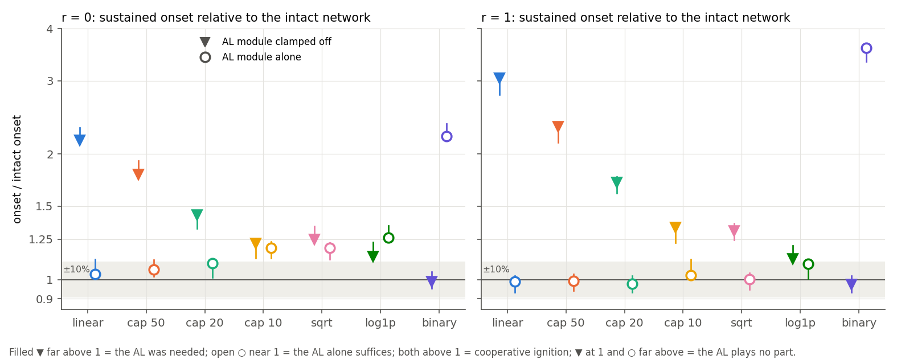
weights/table.md.2. Where the real fly sits
Two measurements pin the operating point. First, the PN/ORN rate ratio G must lie in 0.29–1.45, which is PN 1–5 Hz over ORN 3.44 Hz. Second, PNs must be silent soon after the ORNs are removed. Both criteria were written down before the runs. Ratios do not depend on the time unit. Absolute rates assume τu = 10 ms.
| Model (r = 1) | Data-allowed g | h = 0 onset | AL alone / rest of brain | Where the fly sits |
|---|---|---|---|---|
| Published | 0.10–0.29 (0.18–0.19 with palps test) | 0.344 | 0.337 / 1.04 | At most 0.63–0.84 of the h = 0 onset (0.64–0.86 of the AL-alone onset); rest of the brain at ≤ 0.28 of its own |
| Depression, all synapses (NW16) | 0.25–1.18* | 1.38 | 3.00 / 1.48 | Whole brain at about 0.85 of ignition (grid bracket 0.83–1.08); AL at ≤ 0.39 of its own |
| Depression, all synapses (KW09) | 0.35–1.39* | 1.66 | 4.53 / 1.74 | About 0.83 (bracket 0.69–0.90); AL at ≤ 0.31 |
| Depression, excitatory outputs (NW16) | 0.32–1.24* | 1.57 | not run | About 0.79 (bracket 0.73–0.96) |
* Upper ends interpolated between the grid points g = 1.15 (passes) and 1.5 (fails); the brackets in the last column use those two grid points. ORN level 0.04, r = 1, palps test not run with depression.
- Inside the allowed range (published model, r = 0, ORN level 0.04, g = 0.12–0.20), PN activity falls to 1/e of its driven level in 2–7 units (20–70 ms) after the ORNs are removed. The AL is completely silent after a median of 5–24 units.
- The AL acts as a moderate amplifier, not a diverging one. At low g the gain grows in proportion to g (G/g = 2.4–2.7, close to the pure ORN → PN estimate of 2.55). Recurrence adds 1.3–3.1× at the top of the allowed range, depending on the ORN level (2.0–2.5 at level 0.04). The AL's fluctuation peak under realistic ORN drive sits at g = 0.16–0.18 (r = 0) and 0.20–0.24 (r = 1), inside the allowed range. The earlier peak at g ≈ 0.30 came from a uniform drive about 3,400 times weaker than a real ORN.
- The palps test is the tightest constraint. With the palps still driven, antennal PNs keep some activity through lateral LN input: 2–9% of their driven level at g = 0.10–0.16, below the pre-registered 10% tolerance, and more than 10% from g = 0.165–0.197. Olsen 2007 saw no spontaneous activity in this condition, so the leak caps the allowed range and points again to lateral excitation onto PNs that is too strong (cause 2). The palps test was not run with depression.
- With depression the allowed range sits above g_lin. Its lower end (0.25–0.35) is already above the linear instability (0.163), so a fully rested network would be linearly unstable there; depression is what keeps activity bounded. Under ORN drive this gives no bursts and no fluctuation peak: the AL-module fluctuation measure stays at 1.2–2.3 over g = 0.06–2.6, while without depression it peaks at 4.2 near g = 0.22 (recomputed from the E3 removal runs). So with depression the AL is a moderate, quiet amplifier, not a near-critical one.
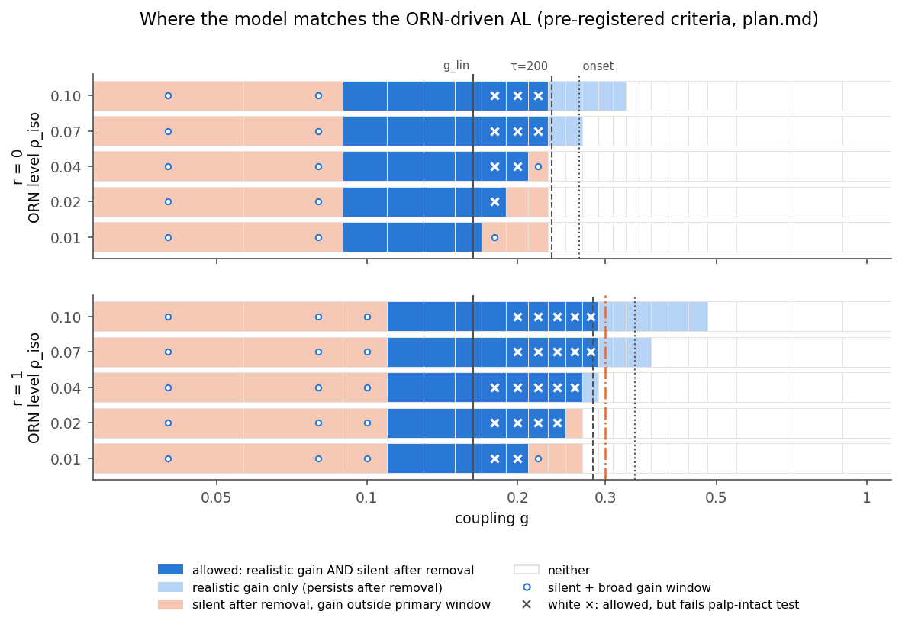
drive/summary.json.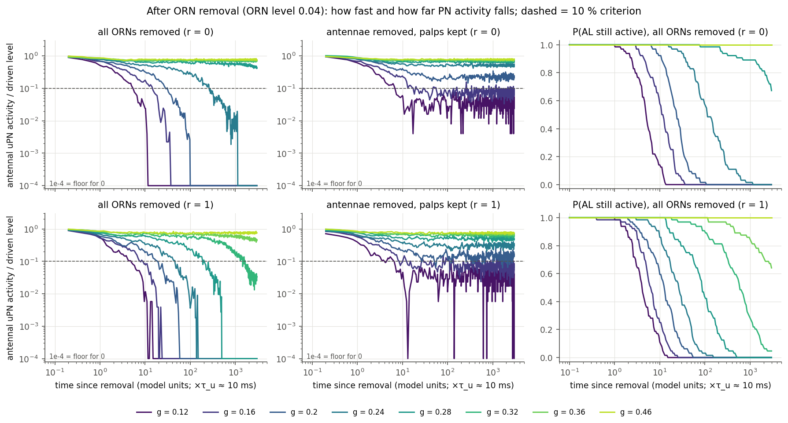
3. The phase diagram after the most defensible fixes
- Quiescent region. At h = 0 it now reaches g ≈ 1.1–1.3 at r = 1 with depression, against 0.29 before. With ORNs driven, this is where the real AL lives: driven, below the sustained onset, silent without input. It is not below the linear instability: from g_lin = 0.163 up, a rested network is linearly unstable, and activity dies only because depression shuts it down.
- The slow window survives, with the same relative width. The ratio of onset to the start of the window (lifetime 200) is 1.21–1.27 with depression and 1.18–1.21 with sign changes, against 1.19–1.21 in the published model (r = 1). It is still a lifetime crossover. Its location is now far above the AL's linear instability: onset/g_lin is 8.5 (NW16) and 10.2 (KW09) at r = 1, against 2.1. Between g_lin and about g = 1, depressed lifetimes stay at 15–70 units (NW16, KW09), hardly longer than the 12–15 units the fully active start needs to die out at g → 0. The linear instability no longer produces long-lived activity.
- No AL-only localized phase. Where activity first lasts, it already covers about 9,000–18,000 neurons (participation ratio), against 1,000–1,400 before. Two settings are exceptions: lLN1_bc at sign 0 with r = 0 (4,700 neurons, AL 23%), and the weak "slow-component" depression (5,000 neurons, AL 21%). The AL module holds 5–11% of the activity with literature depression (13% when only lLN1_bc depress), and 0.3–9% with sign changes at r ≥ 1. The pattern is mostly central brain and nerve cord, plus optic lobe once the clique is silenced. With depression, AL neurons are still the most active per neuron (18–39× the rest of the brain), but they no longer start the ignition. "Localized" survives only in the weak sense of participation below N/4.
- Delocalization. At r = 0 with depression the delocalization line moves from 1.47 to about 6.3, my interpolation of the participation ratio. At r = 1 it was not reached by g = 8, the end of the grid. Up to that point, participation at g = 8 is the same as in the published model (0.185 against 0.186). With sign changes it barely moves (r = 0: 1.47 → 1.48–1.64; r = 1: 14.4 → 14.5–17.0).
- Crossover or transition? The published model's onset is a continuous transition at g_lin, rounded by the module's finite size, with no first-order signs (phase-diagram v2 criticality and multistability programs). After the fixes, sustained activity begins in a broad network far above the AL's g_lin. Silence is far from linearly stable there: at the NW16 onset (g = 1.38), 47 of the top 400 excitatory modes (43 of them outside the AL) are past their linear threshold. What holds activity back below the onset is depression, a nonlinearity. A frozen-resource birth–death theory reproduces the depressed AL-alone onsets (2.83 against 3.00; 4.37 against 4.53), but only with its effective module size calibrated on the published-model runs. No avalanche, quasi-stationary or hysteresis tests were run on the corrected models, so the nature of the broad onset (a smooth crossover, a rounded continuous transition, or a first-order jump) is open.
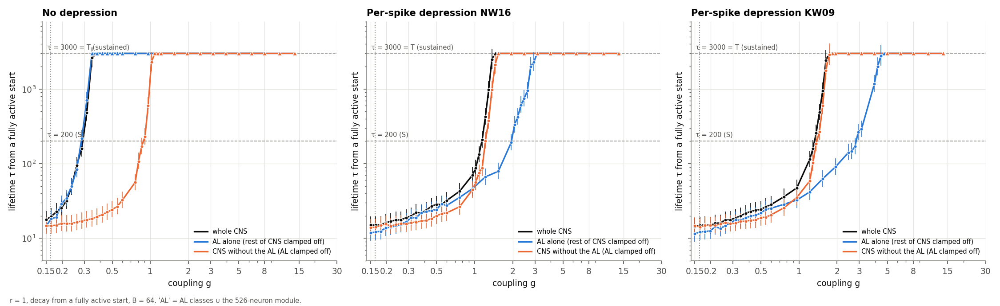
depression/key_numbers.json.![Three panels against coupling g for the ORN-removal protocol with and without depression. Left: PN/ORN gain, with depression curves lying 2.4 to 5.6 times below the no-depression curve, so the realistic gain band is crossed between g 0.25 and 1.4 instead of 0.11 to 0.29. Middle: PN activity remaining after removal, which jumps above 10 percent near 0.3 without depression and near 1.2 to 1.5 with it. Right: the fraction of runs still active at the end, which rises near 0.3 without depression and near 1.2 to 2 with it.](figs/aldef/depression_removal.png)
4. What should change, and the experiment that would decide
Recommended model default
- Per-spike depression on excitatory outputs (
--std_mode spike, U = 0.25, τrec = 157 units ≈ 1.6 s, the NW16 values). Use all-synapse depression and the KW09 and N15 values as sensitivity checks. Do not use the default rate mode: it also weakens a rested neuron's first spike and moves g_lin by 1.2–1.3×. - ORN drive instead of h = 0: all 2,639 ORNs at isolated-unit activity 0.04 (h ≈ 0.038; 3.6 Hz at 10 ms per unit).
- Choose g inside the data-allowed range (0.32–1.24 at r = 1 for this setting; the upper end is interpolated between grid points 1.15 and 1.5). Report results relative to that range and to the brain-wide onset (1.57), not relative to an AL onset.
- Keep linear synapse counts and the released transmitter labels.
- Next code change: per-edge signs, with lLN1_bc → PN non-chemical (sign 0 or weak) and lLN1_bc → LN excitatory. This is the realistic version of cause 2 and is untested. Then rerun the palps-intact test with depression, and give drive to the other sensory inputs too.
The fly experiment that would decide
- Measure the lLN1_bc → lLN1_bc synapse, which carries 42% of the leading eigenvalue. Use a split-GAL4 line matched to lLN1_bc morphology. Stain for ChAT or VAChT to settle the label. Make paired recordings onto another lLN1_bc, onto a PN and onto a GABAergic LN. Block nicotinic receptors with mecamylamine, test a shakB gap-junction mutant, and deliver 10–20 Hz trains. That gives the sign per target, the electrical share, the strength, and the paired-pulse depression (f, τrec). In the model, depression of f ≈ 0.75 on lLN1_bc outputs alone moves the onset 2.7×.
- Functional test. Remove the antennae and palps, drive lLN1_bc optogenetically with conditioning trains of different lengths, and record PNs and LNs after the light goes off. Expectation (not simulated): with depression, the after-activity is short and gets shorter after longer trains. Without depression, it does not depend on train length, and a gain increase of only 1.15–1.9× would make it self-sustaining.
Caveats. The model time unit is an assumption: τu = 10 ms makes the maximum rate 45 Hz. Rate ratios are unaffected by it, but the depression results are not, because the recovery time in model units is τrec/τu. At τu = 50 ms (the upper bound) it would be about 31 units, and the matching run (recovery 30 units) raises the onset only 2.5× and leaves the AL module 18% of the activity at onset. LN → LN and PN → LN depression are unmeasured, so ORN-synapse values stand in for all synapses. The simulator has no gap junctions. The sign ensemble assumes the non-consensus probability is shared among transmitters in proportion to their frequency in the release. Most depression arms are r = 1 only, and the depression runs used one ORN level. In the ORN-drive runs, non-olfactory inputs sit at h = 0. Boundaries are interpolated on grids, with uncertainties of about ±2–10% (more for the upper ends of the depressed allowed ranges, see section 2). Checks. An adversarial pass recomputed every onset quoted here from the raw runs, with three different onset definitions (lifetime, half alive, late lifetime): all agree within 0.4% of the lane values, and the ratios within about 2%. Five onsets were rerun with new seeds and agree within 3%. The current simulator gives bit-identical output to the original one with every new option off, and its faster "push" engine gives the same onset (0.345 against 0.346). The quoted sentences of the six most important papers were re-read in the papers themselves (results/aldef/verify/verify.json, code/ald_verify.py). Lane reports and tables: results/aldef/ (lit_biophysics.md, drive/, signs/, depression/, weights/, synth/synth_numbers.json); figures figs/aldef/.
New references (the others are in section 11):
- Benayoun M, Cowan JD, van Drongelen W, Wallace E 2010. Avalanches in a stochastic model of spiking neurons. PLoS Comput Biol 6:e1000846. PMC2900286
- Chou YH et al. 2010. Diversity and wiring variability of olfactory local interneurons in the Drosophila antennal lobe. Nat Neurosci 13:439. PMC2847188
- Eckstein N et al. 2024. Neurotransmitter classification from electron microscopy images at synaptic sites in Drosophila melanogaster. Cell 187:2574. PMC11106717
- Gu H, O'Dowd DK 2006. Cholinergic synaptic transmission in adult Drosophila Kenyon cells in situ. J Neurosci 26:265. PMC6674319
- Kazama H, Wilson RI 2008. Homeostatic matching and nonlinear amplification at identified central synapses. Neuron 58:401. PMC2429849
- Kazama H, Yaksi E, Wilson RI 2011. Cell death triggers olfactory circuit plasticity via glial signaling in Drosophila. J Neurosci 31:7619. PMC3119471
- Nagel KI, Hong EJ, Wilson RI 2015. Synaptic and circuit mechanisms promoting broadband transmission of olfactory stimulus dynamics. Nat Neurosci 18:56. PMC4289142
- Nagel KI, Wilson RI 2016. Mechanisms underlying population response dynamics in inhibitory interneurons of the Drosophila antennal lobe. J Neurosci 36:4325. PMC4829653
- Tobin WF, Wilson RI, Lee WCA 2017. Wiring variations that enable and constrain neural computation in a sensory microcircuit. eLife 6:e24838. PMC5440167
- Yaksi E, Wilson RI 2010. Electrical coupling between olfactory glomeruli. Neuron 67:1034. PMC2954501
Depression parameter sets: KW09 = Kazama & Wilson 2009 ORN → PN (keeps 72% per spike, recovers in 2.4 s); N15 = Nagel 2015 ORN → PN (78%, 0.89 s); NW16 = Nagel & Wilson 2016 ORN → LN (75%, 1.57 s). The release probability of ORN → PN synapses, 0.79 per site, is from Kazama & Wilson 2008. The LN transmitter fractions are from Chou 2010 and Eckstein 2024.
13Open questions and runs in progress
- Done since the first version: the sweep to \(g = 4\) (no global jump; see sections 6–7), real-network spreading (section 8), the movie (section 6), and the spectrum of the exact operator the simulation uses, for the real and the rewired network (section 9). No simulations are running now.
- Since done: the weight-shuffled null, module seeds, long runs, the full (g, r) phase diagram and the driven plane (section 10); the antennal-lobe literature check (section 11).
- Running now: a de Candia-style phase diagram (module phases, second- vs first-order lines, hysteresis), finite-size scaling of the onset, and criticality tests at g_lin, which answer whether the steep crossover is a rounded second-order transition.
- Open: why the theory overstates inhibition (about 2× in K); an isoflurane-like cholinergic weight cut (section 11); telling depression and the lLN1_bc sign apart needs per-target signs and a measurement of the lLN1_bc→lLN1_bc synapse (section 12); heterogeneity, adaptation and neuromodulation as sources of more rare regions
14Glossary
- Coupling \(g\)
- One global multiplier on every synaptic weight. Turning it up makes the whole network more excitable.
- Absorbing state
- A state the system can enter but never leave. Here: all neurons quiet with no external drive.
- Eigenvector / eigenvalue
- A pattern of activity the connectivity maps onto a scaled copy of itself, and the scale factor. Large eigenvalues are the patterns the network amplifies most.
- IPR
- Inverse participation ratio. About \(1/k\) for a vector spread over \(k\) neurons; \(1/N\) when spread over all of them.
- Participation ratio
- The effective number of neurons carrying the activity, computed from per-neuron activity levels.
- Localization
- An eigenvector or activity pattern concentrated on a small subset of neurons.
- Rare region
- A part of a heterogeneous network that is more strongly connected than average, so it can sustain activity under conditions where the network as a whole cannot.
- Griffiths phase
- An extended range of parameters, below the global transition, where rare regions make the averaged dynamics slow and power-law-like.
- Lifshitz tail
- A sparse tail of large, localized eigenvalues at the top of the spectrum, the spectral fingerprint of rare regions.
- Null model
- The connectome with its wiring randomly shuffled, keeping each neuron's number of inputs and outputs and every synapse count. Whatever disappears in the null is due to the specific wiring.